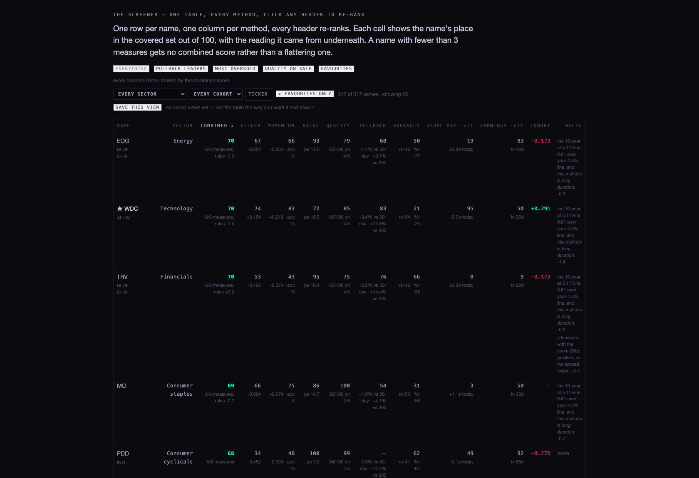
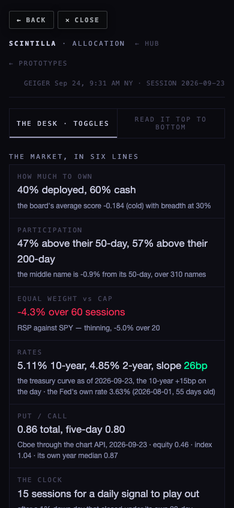
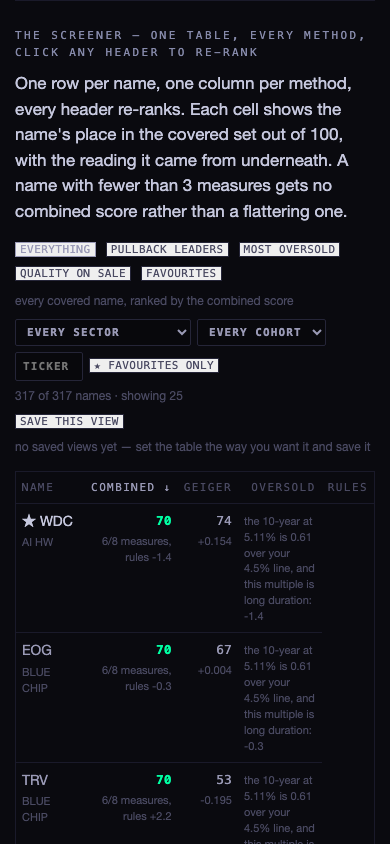
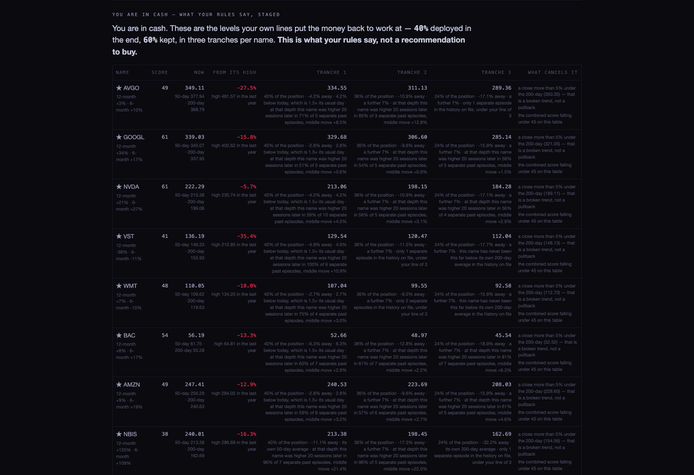

You said the allocation page was telling you its conclusion first, that it looked unwired, and that the methods were scattered across a lot of reading. This rebuild does four things: it puts the evidence first and the conclusion last, it collapses every method into one table you can re-rank, it makes the template carry the things the assistant actually uses (rates, breadth, put/call, the clock), and it turns your cash position into a staged plan instead of a shrug.
Everything below was read live while the page was open, this morning, 24 September, with the market in pre-market. No number on the page is typed in, and nothing was deployed — the coordinator merges.
I audited every read the page makes. The page now carries that audit at the bottom of itself, so you can check it any day without asking anyone. Today, twenty of twenty-one reads answered.
| What | Where it comes from | Today |
|---|---|---|
| The Geiger, per name | chart API /geiger | read — 364 symbols, session 2026-09-23 |
| Sectors, size, multiples, debt, margins | company_profile · fundamentals · ratios_history | read — 384 / 366 / 1,646 rows |
| 50-day, 200-day, RSI, Williams, ADX, sigma | provider_indicators_current | read — 2026-09-23 |
| Earnings calendar, cohorts, favourites | earnings_events · ticker_cohorts · hub_favorites | read — 72 names starred |
| The tape, SPY and RSP and the eleven sector funds | chart API /candles | read — 13 of 13 |
| The treasury curve | treasury_rates | NEWLY WIRED — every tenor, 2026-09-23 |
| The Fed's own rate | econ_history · federalFunds | NEWLY WIRED — 3.63%, 55 days old, monthly |
| Put / call, with its parts | chart API /candles · PCC, PCCE, PCCI | NEWLY WIRED — 0.86 total, 0.46 equity, 1.04 index |
| live_quotes (the price table) | Supabase live_quotes | REMOVED — its newest row is weeks old |
| composite_staged (the legacy store) | Supabase composite_staged | KEPT, NARROWED — no company uses it |
The two honest answers. live_quotes is dead: its newest row dates to mid-August, because the job that filled it stopped. Nothing on the page reads it any more; prices come from the chart API, which is fresh to the second. composite_staged — the legacy store you saw — is not used for any company. It survives for one narrow job, and the page names it per row: the board's own cohort number keeps the legacy value for members that are not declared equities (the crypto pairs, the metal futures, the yields). If it were dropped outright, the cohort strip on this page would stop matching the board's.
One thing the Hub still gets wrong. The Hub's sentiment card says the chart API answers 404 for put/call. It does not any more — it answered 200 this morning, from Cboe. That note is stale, and it is worth fixing on the dashboard as well.
One row per name — 317 of them today — and one column per method: Geiger, momentum, value, quality, pullback, oversold, the usual day, and earnings timing. Each cell shows the name's place out of 100 inside the covered set, with the reading it came from printed underneath (so 86 in VALUE sits above pe 14.7). Click any header and the table re-ranks; click it again to reverse.



Each input states its rule with a number, and the page reports what that rule changed today. Every one of them is a slider you can move.
| Input | Today | The rule | What it did |
|---|---|---|---|
| The Fed's own rate | 3.63%, 55 days old | A rise takes 5 points off deployed cash while it works through | no rise on file this month |
| The 10-year | 5.11%, +15bp on the day | Above 4.5%, each excess point takes up to 8 points off the most expensive names and adds 4 to financials | applied to every row — named per name |
| The slope (2s10s) | +26bp | Under 0bp is late-cycle: 5 points off deployed cash | not inverted, so nothing |
| Equal weight vs cap weight | −4.3% over 60 sessions | Breadth carries 30% of how much to own | moved deployed cash directly |
| Put / call | 0.86 total, 0.80 five-day | Over 1.00 fear lifts oversold by up to 6 points and adds 3 to cash deployed; under 0.70 does the reverse | between your lines — nothing applied |
| Participation | 47% above the 50-day, 57% above the 200-day | Feeds breadth, and sets what counts as a leader (10% above its 200-day) | the PULLBACK LEADERS preset |
| The usual day (sigma) | each name's own 20-day sigma | Tranche spacing is 1.5× the name's usual day | the levels in the plan below |
| Earnings | a filed date per name | A report inside 7 sessions takes 8 points off the row and holds its tranche | named per row |
| The squeeze | SPY's 20-session move is normal | Stated, not wired: a squeeze says a move is coming, not which way | nothing — deliberately |
Your Fed question, answered directly. If the Fed raises, two things happen on this page without anyone rewriting it: deployed cash steps back by your hike line while the new rate works through, and the table marks down long-duration names — the expensive multiples — while marking up financials, because a bank earns the spread and a positive slope helps it. Today the 10-year is 5.11%, well over the 4.5% line, so that mark-down is already running; the curve is +26bp, so financials get the lift rather than the late-cycle cut. That is why TRV and EOG sit at the top of the table this morning rather than the expensive growth names.
Your twelve names, each with three tranches, levels taken from that name's own history — its 20-day sigma, its 50-day and its 200-day — not from a round number. Every tranche says what triggers it, what cancels it, and how often the name has been that far below its own 200-day before, with what followed.
| Name | Now | From its 12-month high | First tranche | What cancels it |
|---|---|---|---|---|
| AVGO | 349.69 | −27.4% | 335.13 — 40% of the position, 4.2% away | a close 5% under its 200-day (368.79) |
| GOOGL | 336.43 | −16.4% | 327.08 — 40%, 2.8% away | the same line, or its score falling under 45 |
| NVDA | 222.19 | −5.7% | 212.97 — 40%, 4.2% away | the same |
| VST | 136.84 | −35.1% | 130.19 — 40%, 4.9% away | the same — and note it is already under its 200-day |
| MU | reports 30 September, inside your 7-session window, so its tranche waits until the report is out | |||
The label on that section is "what your rules say". It is never called a buy, no order is placed, and nothing is sent anywhere. Each tranche is described as staying live for about as long as a daily signal takes to play out on SPY.

RSP has lagged SPY by 4.4% over 60 sessions and 7.4% over 120. The page measures where that lag sits: by sector, the furthest behind are Utilities (−17.2%), Industrials (−10.5%) and Real estate (−10.5%), against Energy +12.8% and Technology +1.7% ahead. By size, the middle third of the covered names carries a much weaker average Geiger than the largest third. The basket is then the best-ranked names inside those lagging sectors, equal weighted, measured against RSP itself over 60, 120 and 252 sessions.
Read that comparison carefully. It is a backward measurement of today's basket, so it carries hindsight: the names were picked with today's rankings, not a year ago. It is not a return you could have had, and the page says so in those words.
hub/allocation-rebuild-20260924
at 6691da9, branched from 19d1870.prototypes/indicator-lab/ or any other Hub room.